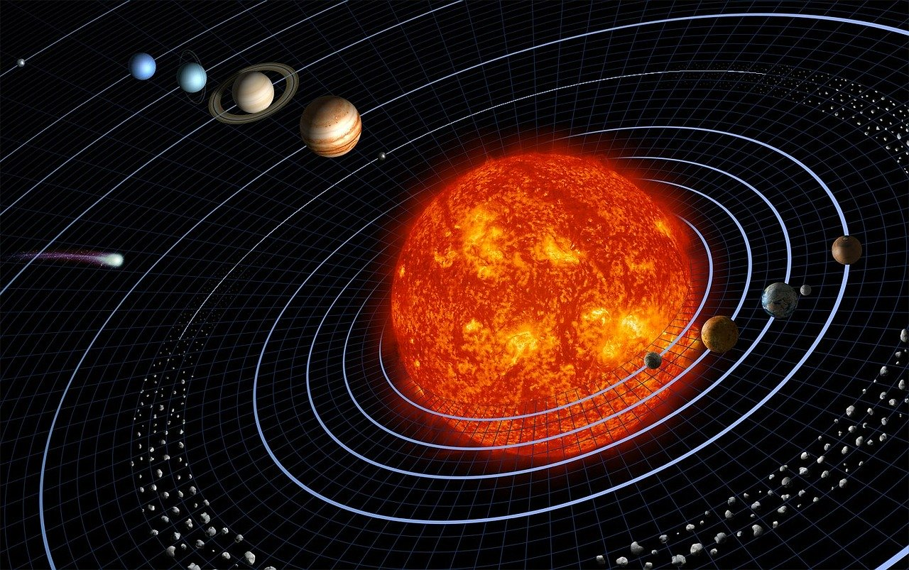
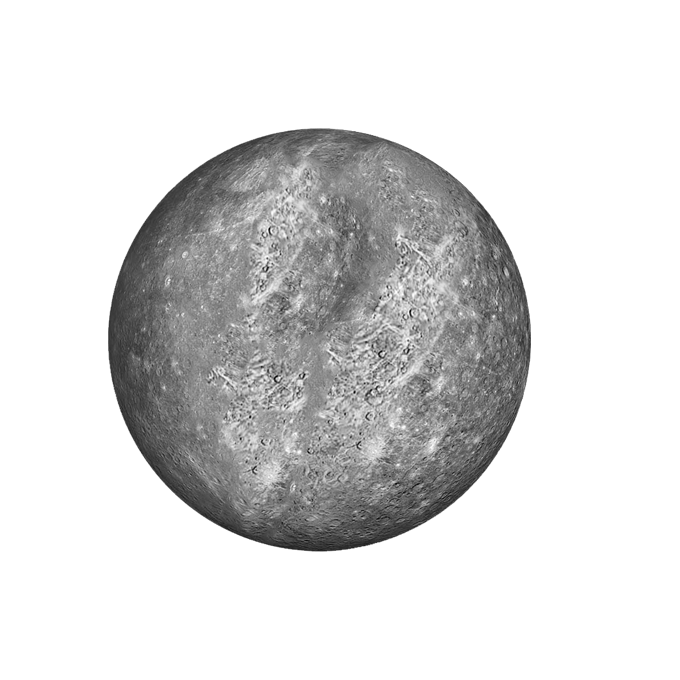
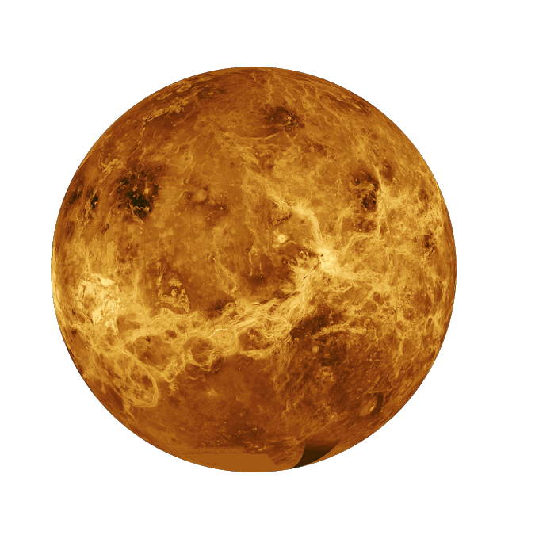
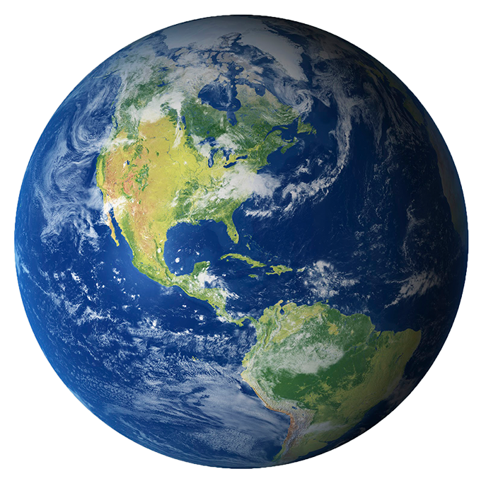
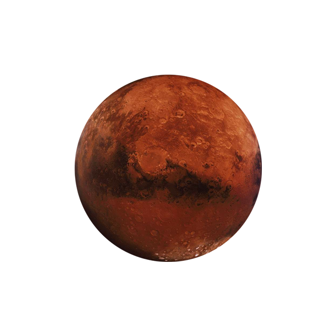
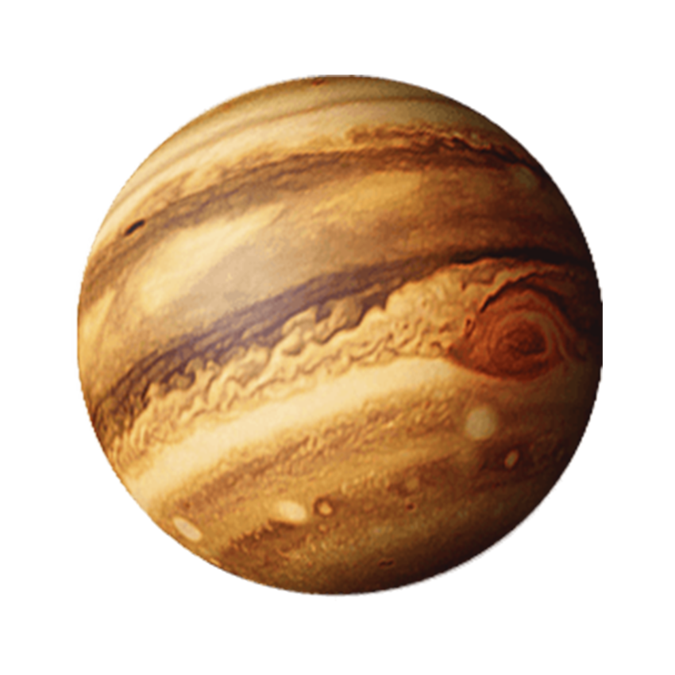
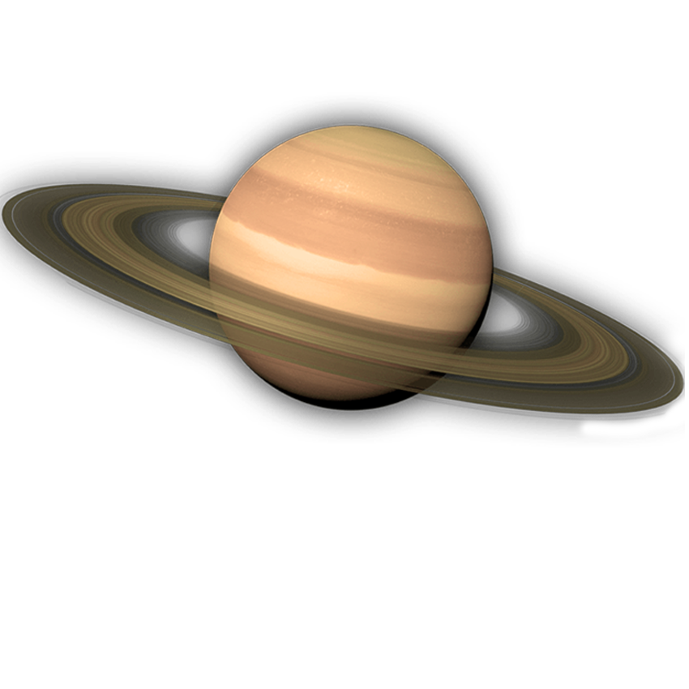
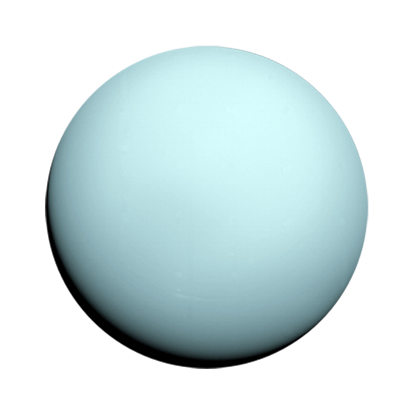
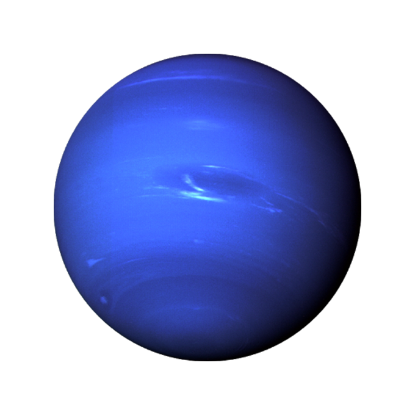

The planetary system we call home is located in an outer spiral arm of the Milky Way galaxy.
Our solar system consists of our star, the Sun, and everything bound to it by gravity — the planets Mercury,
Venus, Earth, Mars, Jupiter, Saturn, Uranus and Neptune, dwarf planets such as Pluto, dozens of moons and millions
of asteroids, comets and meteoroids.
Beyond our own solar system, there are more planets than stars in night sky. So far, we have discovered thousands
of planetary systems orbiting other stars in the Milky Way, with more planets being found all the time. Most of
the hundreds of billions of stars in our galaxy are thought to have planets of their own, and the Milky Way is but
one of perhaps 100 billion galaxies in the universe.
While our planet is in some ways a mere speck in the vast cosmos, we have a lot of company out there. It seems
that we live in a universe packed with planets — a web of countless stars accompanied by families of objects,
perhaps some with life of their own.
Planets
There are more planets than stars in our galaxy. The current count orbiting our star: eight.
The inner, rocky planets are Mercury, Venus, Earth and Mars. The outer planets are gas giants Jupiter and Saturn and ice giants Uranus and Neptune.
Beyond Neptune, a newer class of smaller worlds called dwarf planets reign, including perennial favorite Pluto.This seemingly simple question doesn't
have a simple answer. Everyone knows that Earth, Mars and Jupiter are planets. But both Pluto and Ceres were once considered planets until new discoveries
triggered scientific debate about how to best describe them—a vigorous debate that continues to this day. The most recent definition of a planet was adopted
by the International Astronomical Union in 2006. It says a planet must do three things:
It must orbit a star (in our cosmic neighborhood, the Sun).
It must be big enough to have enough gravity to force it into a spherical shape.
It must be big enough that its gravity cleared away any other objects of a similar size near its orbit around the Sun.


Mercury
Mercury is the smallest and innermost planet in the Solar System. Its orbit around
the Sun takes 87.97 days, the shortest of all the planets in the Solar System. It is named after the Roman
deity Mercury, the messenger of the gods

Venus
Venus is the second planet from the Sun. It is named after the Roman goddess of love
and beauty. As the second-brightest natural object in the night sky after the Moon, Venus can cast shadows
and, rarely, is visible to the naked eye in broad daylight.

Earth
Earth is the third planet from the Sun and the only astronomical object known to
harbor life. According to radiometric dating and other evidence, Earth formed over 4.5 billion years ago.
Earth's gravity interacts with other objects in space, especially the Sun and the Moon, which is Earth's
only natural satellite. Earth orbits around the Sun in 365.256 days, a period known as an Earth sidereal
year. During this time, Earth rotates about its axis about 365.256 times.

Mars
Mars is the fourth planet from the Sun and the second-smallest planet in the Solar
System after Mercury. In English, Mars carries a name of the Roman god of war and is often referred to as
the 'Red Planet'.

Jupiter
Jupiter is the fifth planet from the Sun and the largest in the Solar System. It is
a gas giant with a mass one-thousandth that of the Sun, but two-and-a-half times that of all the other
planets in the Solar System combined.

Saturn
Saturn is the sixth planet from the Sun and the second-largest in the Solar System,
after Jupiter. It is a gas giant with an average radius about nine times that of Earth. It has only
one-eighth the average density of Earth; however, with its larger volume, Saturn is over 95 times more
massive.

Uranus
Uranus is the seventh planet from the Sun. It has the third-largest planetary radius
and fourth-largest planetary mass in the Solar System. Uranus is similar in composition to Neptune, and
both have bulk chemical compositions which differ from that of the larger gas giants Jupiter and Saturn.

Neptune
Neptune is the eighth and farthest known planet from the Sun in the Solar System. In
the Solar System, it is the fourth-largest planet by diameter, the third-most-massive planet, and the
densest giant planet. Neptune is 17 times the mass of Earth, slightly more massive than its near-twin
Uranus.
![[banner]](img/Artboard 1.png)